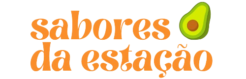

Saboreie a natureza em sua melhor forma! Os alimentos da estação são mais saborosos, nutritivos e sustentáveis. Ao consumi-los, você fortalece a economia local, reduz o impacto ambiental e garante uma alimentação mais saudável. Além, é claro, de pagar bem mais barato!
Digite o mês ou o alimento abaixo e confira a sazonalidade: